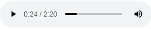

Для листания картинок:
На устройствах с клавиатурой можно пользоваться стрелочками клавиатуры: вправо или влево;
На устройствах с сенсорным экраном для листания вперёд/назад достаточно провести пальцем по экрану вправо или влево;
Рассказик можно послушать, а можно прочитать:
Кнопочка справа вверху ✎ открывает окошко с текстом.
Прослушивание записанного рассказа.
Внизу страницы расположена панель аудио-проигрывателя:

Справа от проигрывателя кнопка  позволяющая включить автопрокрутку картинок с чтением рассказика вслух.
позволяющая включить автопрокрутку картинок с чтением рассказика вслух.
Во многих рассказах, как, впрочем, и в жизни, мы таки часто услышим матершинку, а сие нежелательно для детей до 18 лет... Поэтому мы таки рекомендуем не врубать громкость так, чтобы оно орало на весь район!
 Автор рисунков одесский художник Ирина Бабиченко
Автор рисунков одесский художник Ирина Бабиченко
 Автор текстов и создатель этого сайта Вадим Сиротенко, г.Свердловск.
Автор текстов и создатель этого сайта Вадим Сиротенко, г.Свердловск.